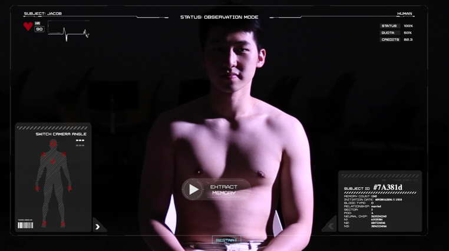
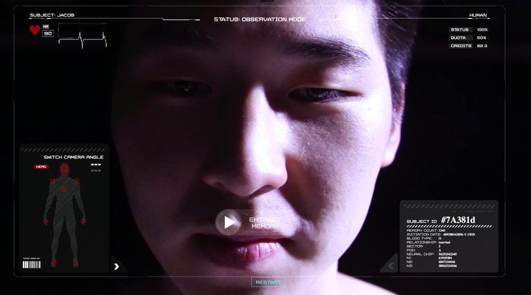
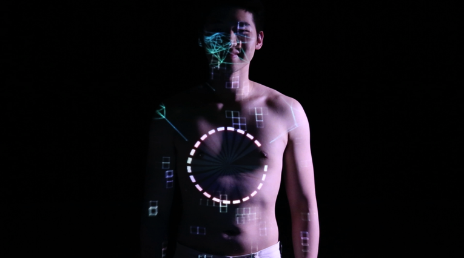
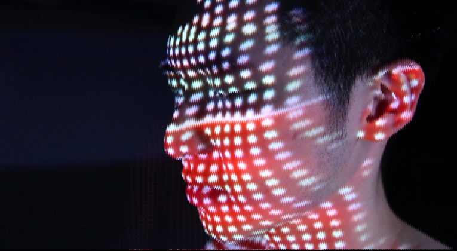
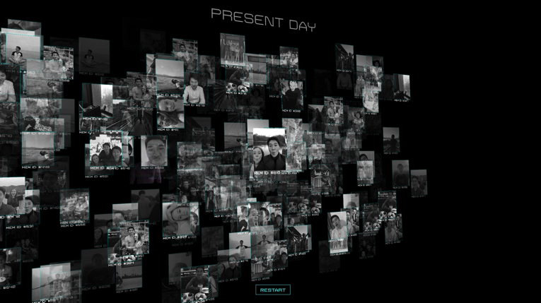

Ex-Memory (2017)
Projection Mapping, Interactive Video
madmapper, processing, kinect, three.js
Spring Show, NYU, Shanghai, China
An interactive film set in the future. Year 3001. Artificial intelligence has taken over the world. A world in which memories are very sought after. You are a memory extraction operator. Your sole task is to monitor, observe and extract his memories from behind the machine. Video shot with Canon EOS 20D and edited in Adobe Premiere. Projection mapping on the body done with Processing, MadMapper and high-resolution projector. Three.JS used for outro.
Collaboration with Sarah Wardles and Chloe Song.
The room is dark. The subject is in a chair. The environment is unusual.

He is being observed, by you.

You can extract his memory now.
The memory plays, the sounds of her laughter ring in his ears.

"Just kidding, I love you."
"One of your skulls? You have more than one skull?"

"Nice, Sarah."

Memory load complete.
Inspiration
With the ever-increasing notion of "the cloud" and the commodification of our online identity, how do we delineate between what is ours and what is taken away from us? This interactive video aims to provide a Black Mirror-esque experience into a world where our memories are sold to A.I. who collect and process our lives. What happens if our collective consciousness is taken away from us?
Technicals
The main video is shot using a Canon EOS 20D with projection mapping on the body in a large blacked-out dance room. The projection are custom animations done in Processing. Post-processing work consisted of simple effects such as warp and levels correction in Adobe After Effects and sequencing in Premiere. Licensed audio effects and soundtracks were overlayed as well as an audio recording of the memory by Sarah and Jacob. THREE.JS is used to piece together hundreds of memories into an interactive 3D wall when the video ends.